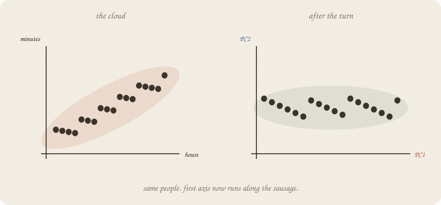
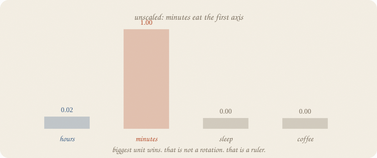
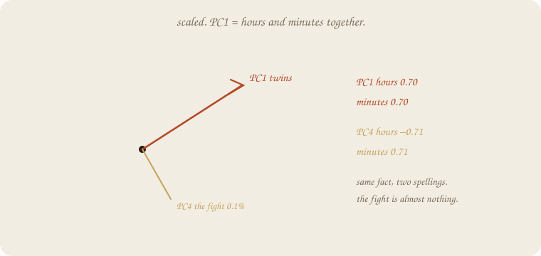
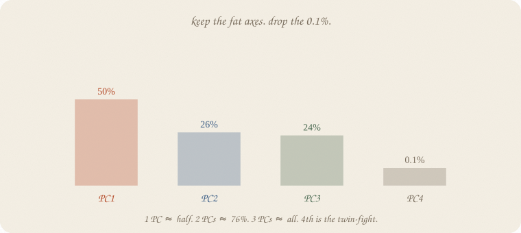
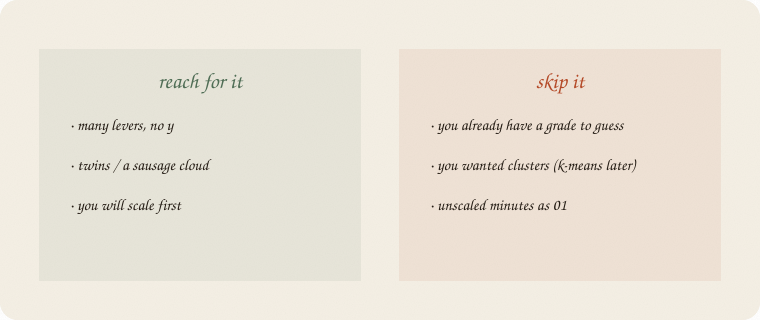

datazines · a sketchbook

Read 01 linear regression and 02 ridge regression first — especially twins. Same exam world: hours, minutes (hours×60 plus leftover), sleep, coffee. No grade. LDA drew two blobs because of pass/fail. This notebook draws one cloud and asks which way it is long.
This is 01 of the unsupervised wing. Rooms are 02 k-means. Embeddings already used PCA as a camera (02 embeddings); here PCA is the machine.
Flip it like a notebook. One page = one idea. Done.
Eighty students, house seed 7. Unlabeled cloud: hours, minutes, sleep, coffee. No grade. Not the thirty graders on the ridge page, and not a pass/fail class.
Nobody asked who passed. Nobody asked ŷ.
The cloud still has a shape. Hours and minutes are almost the same fact (corr 0.997). Sleep is its own direction (corr with hours 0.061). Coffee rattles.
The job: name the long ways of that cloud, then maybe throw the short ones away.
People call this principal component analysis. Ugly name. Friendly job: rotate so PC1 is the sausage.
Do not scale. Fit two PCs anyway.

PC1 is minutes 1.00, hours 0.02. Explained: 1.00. Of course. Minutes live around 60–360. Hours live around 1–6. The fattest ruler wins. That is not a rotation. That is a unit.
Ridge already taxed size. PCA is size unless you fix the spelling first.
Subtract the mean. Divide by the spread. Then rotate.

| hours | minutes | sleep | coffee | scatter kept | |
|---|---|---|---|---|---|
| PC1 | 0.70 | 0.70 | 0.09 | −0.03 | 50% |
| PC2 | −0.03 | −0.02 | 0.68 | 0.73 | 26% |
| PC3 | −0.06 | −0.06 | 0.73 | −0.68 | 24% |
| PC4 | −0.71 | 0.71 | 0.00 | 0.00 | 0.1% |
PC1 is the twins, sharing, like ridge asked them to. PC4 is the fight — hours minus minutes — almost nothing. Drop it and you dropped a spelling difference, not a fact.
PC2 and PC3 split sleep vs coffee. Honest leftover directions, not a second sausage.

1 PC keeps half the (scaled) scatter. Reconstructing the four columns from PC1 only: mean leftover² 0.499.
2 PCs keep 76%. Leftover² 0.239.
3 PCs keep 99.9%. The fourth is the twin-fight.
You do not need a medal cutoff. Look at the bars. Keep until the next bar is a whisper. New people: that whisper will not save you.
This is not a grade line. There is no ŷ. There is a thinner cloud that still looks like the old one.
If you keep only one thing:
no y. scale. turn the sausage. drop the thin axis.
Same unlabeled cloud — eighty students, four levers, no grade. House seed 7.
import numpy as np
from sklearn.decomposition import PCA
from sklearn.preprocessing import StandardScaler
rng = np.random.default_rng(7)
n = 80
hours = rng.uniform(1, 6, n)
minutes = hours * 60 + rng.normal(0, 8, n)
sleep = rng.uniform(4, 9, n)
coffee = rng.uniform(0, 4, n)
X = np.column_stack([hours, minutes, sleep, coffee])
names = ["hours", "minutes", "sleep", "coffee"]
print("corr hours·minutes", round(np.corrcoef(hours, minutes)[0, 1], 3))
print("corr hours·sleep ", round(np.corrcoef(hours, sleep)[0, 1], 3))
raw = PCA(n_components=2, random_state=7).fit(X)
print("unscaled PC1", {n: round(float(v), 3) for n, v in zip(names, raw.components_[0])},
" explained", round(raw.explained_variance_ratio_[0], 3))
Xs = StandardScaler().fit_transform(X)
pca = PCA(random_state=7).fit(Xs)
print("scaled explained", np.round(pca.explained_variance_ratio_, 3).tolist())
print("scaled cumulative", np.round(np.cumsum(pca.explained_variance_ratio_), 3).tolist())
for i, row in enumerate(pca.components_, 1):
print(f"PC{i}", {n: round(float(v), 3) for n, v in zip(names, row)})
p1 = PCA(n_components=1, random_state=7).fit(Xs)
p2 = PCA(n_components=2, random_state=7).fit(Xs)
print("recon mse 1 PC", round(((Xs - p1.inverse_transform(p1.transform(Xs))) ** 2).mean(), 3))
print("recon mse 2 PC", round(((Xs - p2.inverse_transform(p2.transform(Xs))) ** 2).mean(), 3))
corr hours·minutes 0.997
corr hours·sleep 0.061
unscaled PC1 {'hours': 0.017, 'minutes': 1.0, 'sleep': 0.001, 'coffee': -0.0} explained 1.0
scaled explained [0.501, 0.26, 0.238, 0.001]
scaled cumulative [0.501, 0.761, 0.999, 1.0]
PC1 {'hours': 0.704, 'minutes': 0.704, 'sleep': 0.086, 'coffee': -0.034}
PC2 {'hours': -0.025, 'minutes': -0.022, 'sleep': 0.68, 'coffee': 0.733}
PC3 {'hours': -0.06, 'minutes': -0.061, 'sleep': 0.728, 'coffee': -0.68}
PC4 {'hours': -0.707, 'minutes': 0.707, 'sleep': -0.001, 'coffee': -0.002}
recon mse 1 PC 0.499
recon mse 2 PC 0.239
Unscaled: minutes 1.00, story dead. Scaled: PC1 twins share 0.70 / 0.70, keep half the scatter. PC4 is hours minus minutes — 0.1%. Reconstruct with 2 PCs: leftover² 0.239 on scaled columns. StandardScaler is not optional. components_ are the directions; explained_variance_ratio_ are the bars.
| word | meaning |
|---|---|
| no y | unsupervised — a cloud, not a grade |
| PC | a new axis, longest leftover first |
| loading | how much each old lever sits on that PC |
| scale | always, or the fat unit wins |
| explained | share of scatter that PC keeps |
Also called: sausage = first principal component · loading = how much a feature sits on that PC · lever = feature.

Reach for it when you have many levers and no y, a sausage / twins, and you will scale first.
Skip it when you already have a grade to guess (01 linear regression); you wanted rooms (02 k-means); you were going to skip the scaler and let minutes be PC1.
Pays you: a thinner cloud that still looks like the people. Twins share one axis. The fight is a bar you can drop.
Costs you: no ŷ. PC1 is not a cause. Unscaled PCA is a ruler, not a rotation. 02 k-means is a different question (blobs, not axes).
Unsupervised 01. No grade. Next: 02 k-means — rooms in the cloud, still no y.
Flip it like a notebook. One page = one idea.